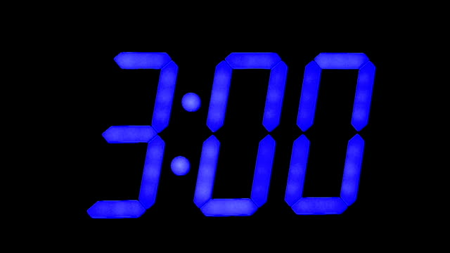

Wake up!

I don’t recall much of my life in campus, yet I did my final exams just two months ago. No reference diary, probably because I didn’t stick to electronic journaling in those 4 years. As far as I can tell, I was just winging it, doing life as it came.
Notion has been a game changer for me. It’s taken care of the journaling part, as well as planning. Generally, I’d say my productivity has improved a bit in the past couple of weeks.
Honestly speaking, I still feel like I’m winging it, directionless. Just letting life take me wherever it will.
So I’ve decided to set clear goals for myself.
The sacrifice? Ideally, sleep at 8pm, wake up at 3am. For the next 3 months. On top of that, I’m gonna be honest… I don’t like masturbation. I don’t even know why I do it. For the next 3 months, no pornography nor masturbation. Sex is welcome though.
Goals
“But… What are these goals?”
For the next 3 months (Up to October \(15^{th}\)), I have 3 major goals:
- Learn enough html, css & js to be able to make my R shiny applications highly interactive and smooth.
- theodinproject.com 1 hour per day.
- Being able to speak fluently in english, not just write.
- 15 minutes of speaking in english per day.
- 100wps typing speed.
- monkeytype.com 10 minutes per day.
“But all that is just 1 hour 25 minutes. Seriously, why would you wake up at 3am bro?”
- I have an 8-5 job, that’s basically the whole day.
- Minimal distractions between 3 and 8am, allowing me to focus fully on whatever I’m doing.
- Life’s pretty dynamic. I don’t use all the 5 hours between 3 and 8am for those goals. Some days I am pretty psyched up and use a good amount of the 5 hours. Some are pretty bad ones for me and end up with only 40 minutes on those goals.
I have a 3am club tweet which I quote everyday after I wake up and indicate which streak day it is. Not wanting to break the streak is a major factor which drives me out of bed.
You’re welcome to join me in this journey!